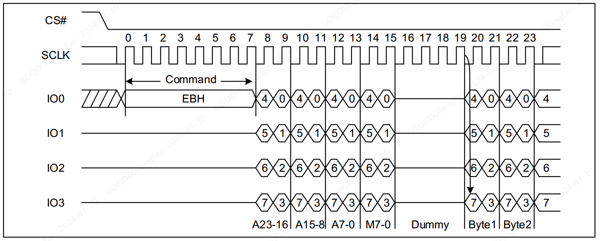

QSPI使用经验笔记
[TOC]
1. 基本功能介绍
每个QSPI 模块均可提供 SPI、Dual SPI、Quad SPI 时序模式
各芯片的QSPI 模块数量及主要参数
| SoC | QSPI实例 | 主要参数 |
|---|---|---|
| GR551x | QSPI0、QSPI1 | 最高主频32MHz; 挂载APB总线;不支持 Memory Map模式;FIFO深度8x4字节 |
| GR5525 | QSPI0、QSPI1、QSPI2 | 最高主频48MHz; 挂载AHB总线;支持 Memory Map模式; FIFO深度 (16~32)x4字节 |
| GR5526 | QSPI0、QSPI1、QSPI2 | 最高主频48MHz; 挂载AHB总线;支持 Memory Map模式; FIFO深度 (16~32)x4字节 |
| GR533x | 无 | 略 |
GR5525 及 GR5526 扩展了Memory Map能力, 可以将 Nor Flash 及QSPI PSRAM 设备空间映射到总线地址空间访问. 各 QSPI 实例的总线地址空间如下 (总线地址空间和别名空间段是等效的, 最低地址均对应 被映射设备的0地址)
| 芯片 | QSPI 实例 | 内存映射的总线地址空间段 (应用中建议使用) | 别名空间段 |
|---|---|---|---|
| GR5526 | QSPI0 | [0xC0000000, 0xC4000000) | [0x10000000, 0x14000000) |
| QSPI1 | [0xC4000000, 0xC4000000) | [0x14000000, 0x18000000) | |
| QSPI2 | [0xC8000000, 0xCC000000) | [0x18000000, 0x1C000000) | |
| GR5525 | QSPI0 | [0x10000000, 0x14000000) | |
| QSPI1 | [0x14000000, 0x18000000) | ||
| QSPI2 | [0x18000000, 0x1C000000) |
2. 应用笔记
使用Memory Map方式访问 外部Flash时, 请注意使用地址对齐, 非地址对齐的数据, 可能发生错序.
芯片涉及QSPI & SPI时序的硬件模块较多, 下面说明帮助用户进行区分:
| 泛SPI时序模块 | 使用场景说明 | 涉及芯片系列 |
|---|---|---|
| XQSPI | 每款芯片用于支持XIP代码执行的模块,主要用于烧写和执行代码使用, 一般合封在芯片内部,部分芯片有外部连接的封装 | GR551x、GR5525、GR5526、GR533x |
| SPIM | SPI Master模块, 挂载在APB总线, 支持全双工工作模式. 用于SPI 协议的小尺寸屏幕、传感器等外设驱动 | GR551x、GR5525、GR5526、GR533x |
| SPIS | SPI Slave模块, 挂载在APB总线, 需要对端作为 Master通讯, 使用场景较少 | GR551x、GR5525、GR5526、GR533x |
| QSPI | QSPI 硬件模块, 全系芯片的QSPI模块都可以支持配置为SPI、Dual SPI、Quad SPI模式使用,当配置为SPI使用时, 行为和 SPIM 模块相似; GR551x的QSPI模块挂载在APB总线, GR5525、GR5526 的QSPI模块挂载在AHB总线, 其Dual/Quad SPI模式支持 Memory Map访问模式; GR533x 没有QSPI模块. QSPI主要用于驱动Nor/Nand Flash、PSRAM、显示屏等外设器件 | GR551x、GR5525、GR5526 |
| DC | DC全称为Display Controller, 注意和Direct Current区分. 此硬件模块主要和GPU模块配合, 用于显示屏的驱动控制, 支持产生MIPI DBI Type-C 协议族下的所有时序类型, 包括 SPI、1-SPI、3/4-wire SPI、QSPI等. 此模式只存在于GR5526 | GR5526 |
| OSPI | Octual SPI, 只存在于GR5526. OSPI 控制器用于作为 芯片内部 OSPI DDR 接口的PSRAM设备的驱动控制器存在. 其产生的时序为 OSPI DDR时序. | GR5526 |
可通过文章 SPI/QSPI协议专题(1) - 基础协议特征介绍 进一步理解 SPI 及泛SPI协议.
注意区分不同应用场景下的QSPI的概念
当用于指代硬件模块时, QSPI模块属于芯片的外设
当用于表示时序概念时, QSPI 指CS、CLK、D0~D3 构成的时序信号。
QSPI 跟DMA的搭配使用原则:
GR551x 下, QSPI0/QSPI1 均可搭配DMA使用
GR5525 & GR5526下
当 QSPI0/QSPI1/QSPI2 工作在 Memory Map模式下时, DMA0/DMA1 均可以用于访问QSPI0/QSPI1/QSPI2的内存空间
当 QSPI0/QSPI1/QSPI2 工作在API接口访问的寄存器模式下时, DMA0可配合QSPI0/QSPI1使用; DMA1可以配合QSPI1/QSPI2使用
当QSPIx和DMA配合用于Flash、屏幕等高吞吐率访问场景下时, 务必使用 DMA的通道0, 通道0设计了最深的FIFO
使用GR5526设计屏幕应用产品时, 请注意, 屏幕接口务必使用 QSPI2 的时序接口, 因为QSPI2硬件模块 和 DC控制器的QSPI时序IO是一致的,这样驱动屏幕时, 既可以使用QSPI2模块,有可以使用DC 模块.
GR5525 & GR5526 的Memory Map模式支持最大 512 MByte的寻址空间.
GR5525 & GR5526 的Memory Map模式下使用 memcpy 接口, 注意编译时不能使用micro-lib. micro-lib 会严重降低QSPI memory map模式下memcpy的传输效率
以下建议对 GR5525 & GR5526 的QSPI模块适用
一般情况在SRAM和工作在内存映射模式下的QSPI设备移动数据时，如果数据量小于1 KB，可优先使 用 memcpy 函数进行；如果数据量大于1 KB，建议使用DMA进行搬运。数据量越大，DMA会展现越 大的优势
在内存映射模式下访问数据时，如果需要使用memcpy/memset函数，Keil工程下请优先编译使用系统 标准库，而不要选用microlib；前者能更好的激活总线Burst传输行为，获得更好的访问效率
部分QSPI设备时序上需要较大的Tcsu(CS Setup Delay Time), 否则不能获得正确稳定的访问数据： • 如果设备支持时钟模式3，可尝试设置时钟模式3。时钟模式3会比模式0有更大的Tcsu • 可通过寄存器配置增加Tcsu时间
一般QSPI PSRAM 设备需要定时释放片选以完成内部数据保持电路的自刷新，最长的片选时间 为tCEM，尤其对于写访问，需要严格遵守。 - 内存映射模式下写访问时，从设计上考虑了tCEM，不用再关注此参数 - 寄存器模式下，从驱动层考虑了tCEM，但寄存器模式接口复杂度较高。建议QSPI PSRAM设备不在寄存器模式下使用
QSPI 存在预取模式，当进行QSPI读访问时，可以进一步提高 QSPI的读效率，但此模式只能配合DMA工作，不能在CPU访问时开启。
GR5525 & GR5526在设计时对各个QSPI的FIFO进行了差异化优化，一般情况下外设混接QSPI不存在问题；同时，GR5525 & GR5526在设计时也对DMA的FIFO进行了差异化优化，为了发挥GR5525 & GR5526的最佳效率，使用建议如下：
QSPI0优先用于连接Flash设备，可搭配DMA0的通道0工作
QSPI1优先用于连接PSRAM设备，可搭配DMA0/DMA1的通道0工作
QSPI2优先用于连接Display设备，可搭配DMA1的通道0工作
请将DMA0/DMA1的通道0优先留给QSPI0/QSPI1/QSPI2 等高速外设使用，且尽量不同时混用
3. QSPI-FAQ
3.1 QSPI支持的最大频率是多少?
QSPI 模块支持的最大频率是系统最高频率的二分之一, 支持的分频系数为 2 ~ 65535 之间的偶数, 不支持奇数分频.
各款芯片QSPI模块的最大频率支持如下:
GR551x 全系列芯片最高主频为64MHz, QSPI的最大工作频率为 32MHz, 时钟源为系统时钟
GR5525 全系列芯片最高主频为96MHz, QSPI的最大工作频率为 48MHz, 时钟源为外设时钟
GR5526 全系列芯片最高主频为96MHz, QSPI的最大工作频率为 48MHz, 时钟源为外设时钟
GR533x 全系列芯片最高主频为64MHz, QSPI的最大工作频率为 32MHz, 时钟源为外设时钟
3.2 QSPI的工作模式介绍.
按照QSPI工作时候需要的数据线划分, QSPI 可配置工作在 SPI 、Dual SPI、Quad SPI模式下；其中 SPI模式和SPI Master模块的工作模式类似
QSPI模块下, Dual SPI 和Quad SPI模式又被称为 Enhanced SPI模式. GR5525和GR5526扩展了Enhanced SPI模式的能力. 支持了Memory Map 能力, 支持将挂载到 QSPI接口的 Nor Flash 和 QSPI PSRAM 存储设备映射到系统的总线地址空间, 使用 Memory Map模式进行访问. 而传统的基于API 访问外设的方式, 称作寄存器工作模式.
关于 工作模式更详细的介绍, 请参考文档: GR552x刷屏指南
3.3 使用Memory Map模式访问访问外部Flash时, 数据端序异常是什么原因? (或图片发生颜色异常)
对于GR5525 & GR5526 芯片, 对Memory Map方式增加了灵活端序模式, 允许用户根据自己的需要, 配置数据的读出端序. 这种情况就是期望的数据端序和配置的端序不匹配导致的, 请参考文档 GR552x刷屏指南 关于QSPI Memory Map模式下数据端序配置的描述. 在访问数据前, 使用驱动接口 app_qspi_mmap_set_endian_mode 配置期望的数据端序.
3.4 使用传统API接口(非Memory Map方式) 读取外部Flash, 数据和期望的数据端序不一致, 请问怎么处理?
请参考文档 GR552x刷屏指南关于读写端序的描述, 应该是数据的写入和读出使用了不匹配的传输宽度导致的逆序. 请尝试调整 DMA 数据传输宽度来修改数据端序行为. 比如
使用 8 bit 传输宽度模式导致2字节的逆序行为, 可以尝试将传输宽度调整为 16 bit (或反之)
3.5 如何支持QSPI 模块使用Memory Map模式,访问大于16MB 4字节地址的Flash？
app_qspi 驱动预置了flash常用3字节地址(最大寻址范围16MB)的读取指令, 如果用户需要扩展4字节的读取指令. 可参考下述定义进行, 以 GD25Q256E 芯片的 EBH 指令为例:

时序格式为:
指令 EBH长度1字节, 通过单线模式发送
地址长度4字节, 通过Quad 模式发送
模式位占用 2个 时钟, 但不需要启用. 归为 Dummy 域
Dummy 域4个时钟加模式位占用的2个时钟， 共6个时钟
其他为数据域
用户扩展定义指令的方法:
在 app_qspi.h 枚举类型app_qspi_flash_mmap_rd_cmd_e下添加自定义枚举值 FLASH_MMAP_CMD_4READ_EBH_32 :
typedef enum { FLASH_MMAP_CMD_DREAD_3BH = 0x00, /**< 3BH in Dual */ FLASH_MMAP_CMD_2READ_BBH = 0x01, /**< BBH in 2Read */ FLASH_MMAP_CMD_2READ_BBH_SIOO = 0x02, /**< BBH in 2Read with SIOO mode */ FLASH_MMAP_CMD_QREAD_6BH = 0x03, /**< 6BH in QRead */ FLASH_MMAP_CMD_4READ_EBH = 0x04, /**< EBH in 4Read */ FLASH_MMAP_CMD_4READ_EBH_SIOO = 0x05, /**< EBH in 4Read with SIOO mode */ FLASH_MMAP_CMD_4READ_EBH_32 = 0x06, /**< ECH in 4Read with 32 bits address mode */ FLASH_MMAP_CMD_READ_MAX, } app_qspi_flash_mmap_rd_cmd_e;
在 app_qspi.c 文件结构体变量增加指令定义, 注意添加位置和 枚举值的索引值保持一直
const qspi_memorymapped_t g_flash_typical_mmap_read_cmd[FLASH_MMAP_CMD_READ_MAX] = { //…}, [FLASH_MMAP_CMD_4READ_ECH_32] = { .x_endian_mode = QSPI_CONCURRENT_XIP_ENDIAN_MODE_0, .x_prefetch_en = QSPI_CONCURRENT_XIP_PREFETCH_DISABLE, .x_continous_xfer_en = QSPI_CONCURRENT_XIP_CONT_XFER_DISABLE, .x_instruction_en = QSPI_CONCURRENT_XIP_INST_ENABLE, .x_instruction_size = QSPI_CONCURRENT_XIP_INSTSIZE_8BIT, .x_address_size = QSPI_CONCURRENT_XIP_ADDRSIZE_32BIT, .x_inst_addr_transfer_format = QSPI_CONCURRENT_XIP_INST_IN_SPI_ADDR_IN_SPIFRF, .x_mode_bits_en = QSPI_CONCURRENT_XIP_MODE_BITS_DISABLE, .x_mode_bits_length = QSPI_CONCURRENT_XIP_MBL_8, .x_mode_bits_data = 0x00, .x_dummy_cycles = 6, .x_continous_xfer_toc = 0, .x_sioo_mode = QSPI_CONCURRENT_XIP_INST_SENT_EVERY_ACCESS, .x_data_frame_format = QSPI_CONCURRENT_XIP_FRF_QUAD_SPI, .x_instruction = 0xEB, } };在Flash 的 Memory Map模式初始化时, 读指令引用上述定义的指令进行初始化即可.
3.6 使用SDK的QSPI 示例工程访问Flash失败, 为什么?
注意检查 示例工程的QSPI 实例配置和实际硬件Flash 连接是否匹配
SDK提供的示例工程适配了常见的Flash 驱动, 如果测试的Flash 不是适配的flash型号,请检查flash的datasheet, 是否和参考驱动兼容, 如果不兼容,请自行进行适配
如果硬件环境恶劣, 比如飞线等场景, 尝试降低 Flash 通讯频率
检查下驱动配置的时钟模式是否和Flash 支持的时钟模式匹配
此外, 还可以使用逻辑分析仪抓取访问 Flash 时序信号分析.
3.7 QSPI 外设有哪些参考程序?
工程 ${SDK}/projects/peripheral/qspi/app_qspi 提供了 app_qspi 驱动访问Nor Flash 的一个应用参考, 可以在SDK 配套的 SK板运行, 用户可以通过这个示例工程, 了解 QSPI APP接口的初步使用.
此外, 针对 GR5525和GR5526, 在 路径 ${SDK}/components/drivers_ext/qspi_device 下提供了如下QSPI外设的驱动参考, 用户可以根据产品的具体情况进行参考和二次开发.
amo139_display_454.c/.h : 基于型号 FLS-AMO139WV334 , 分辨率454x54, 驱动IC SH8601A 的显示屏开发.
qspi_flash.c/.h : 兼容 PUYA、XTX等多款市面常用Nor Flash的驱动参考
qspi_nand_flash.c/.h : 基于 Nand Flash DOSILICON.DS35 的驱动参考
qspi_psram.c/.h : 基于 APMemory QSPI 接口的PSRAM 驱动参考
qspi_screen_390.c/.h : 基于鑫世界 RM69330 的显示屏驱动参考, 适配了 390p和454p分辨率